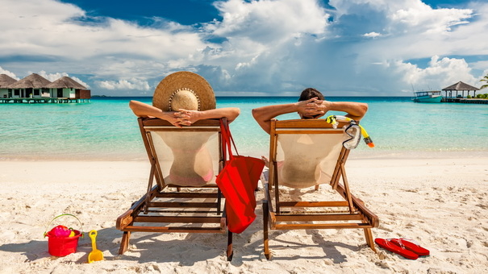
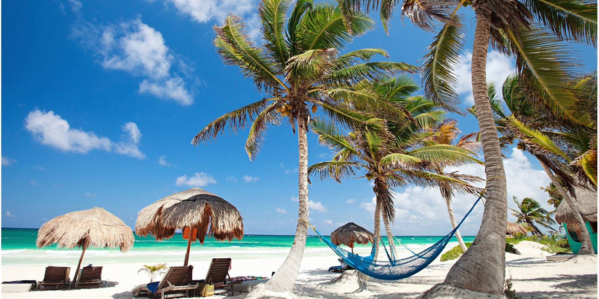
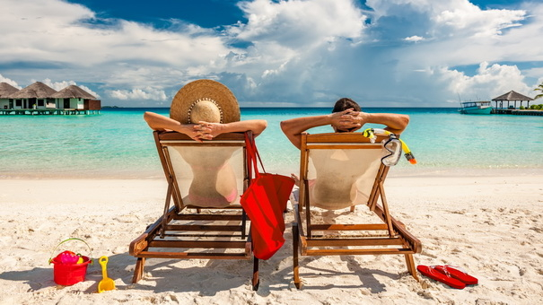
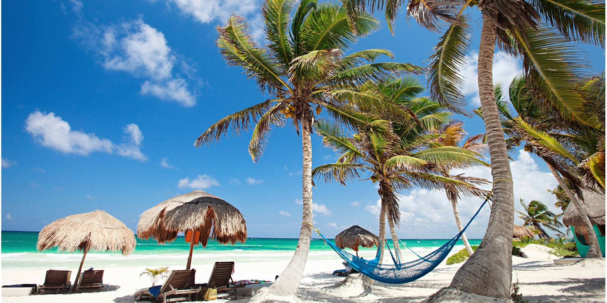
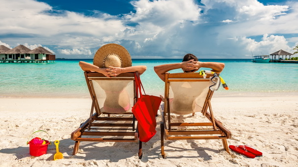
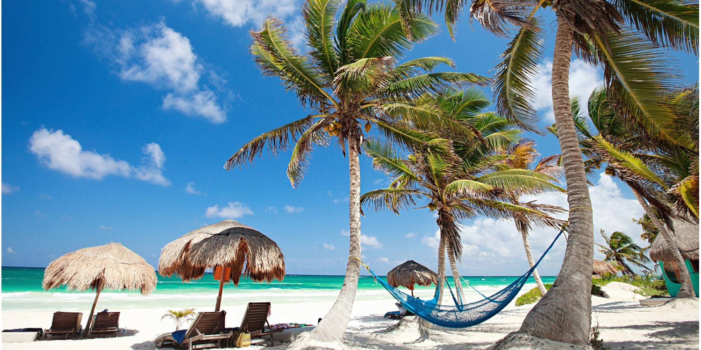

Go There.. Have that Vaction
This 7.5-square-mile private island paradise is a 50-minute charter flight
from Nadi and worlds away from everyday life.
Covered in tropical jungle (reached via guided walking tours or horseback rides),
Laucala is home to some of the archipelago’s rarest birds and animals,
pristine beaches, and spellbinding marine life.
Seagrass Bay is the quietest of the resort beaches, and a perfect spot
to play at being Crusoe—albeit with a fabulous, open-air dining room nearby.
Where to Stay: Your only option—Laucala Island Resort—is far from shabby.
In 1972, Malcolm Forbes bought this luscious green morsel as his private refuge;

